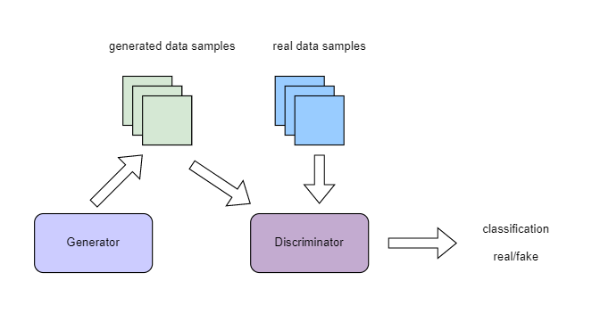
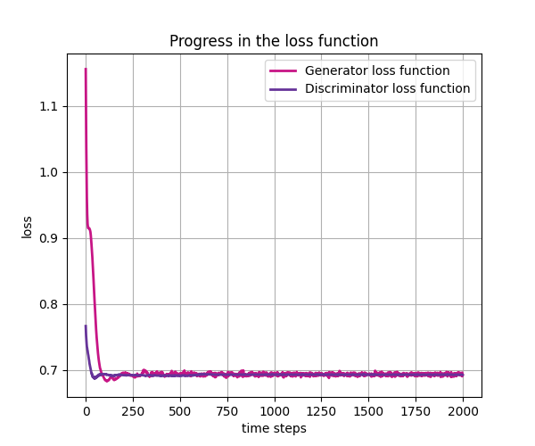
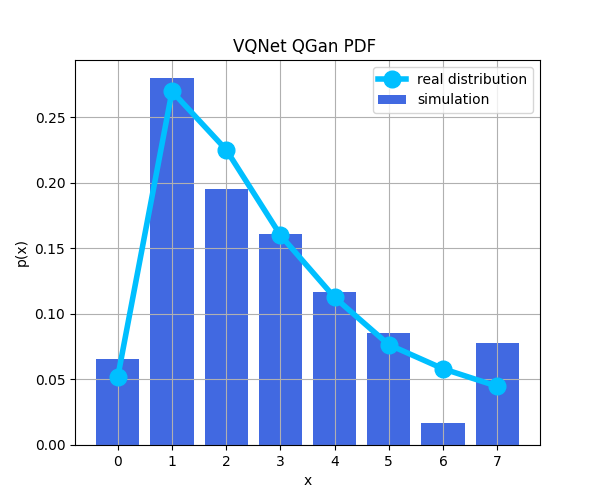
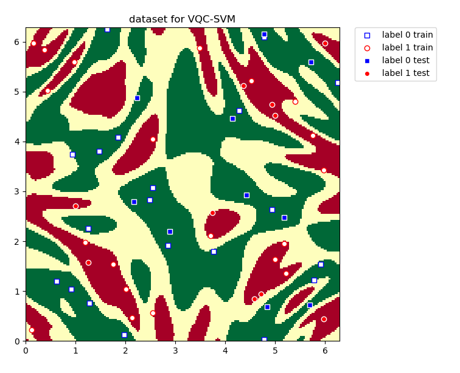
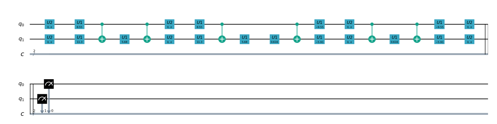

Quantum Machine Learning API using QPanda2¶
Warning
The quantum computing part of the following interface uses pyQPanda2 https://pyqpanda-toturial.readthedocs.io/zh/latest/.
Due to the compatibility issues between pyQPanda2 and pyqpanda3, you need to install pyqpnda2 yourself, pip install pyqpanda
Quantum Computing Layer¶
QuantumLayer¶
QuantumLayer is a package class of autograd module that supports ariational quantum circuits. You can define a function as an argument, such as qprog_with_measure, This function needs to contain the quantum circuit defined by pyQPanda: It generally contains coding-circuit, evolution-circuit and measurement-operation.
This QuantumLayer class can be embedded into the hybrid quantum classical machine learning model and minimize the objective function or loss function of the hybrid quantum classical model through the classical gradient descent method.
You can specify the gradient calculation method of quantum circuit parameters in QuantumLayer by change the parameter diff_method. QuantumLayer currently supports two methods, one is finite_diff and the other is parameter-shift methods.
The finite_diff method is one of the most traditional and common numerical methods for estimating function gradient.The main idea is to replace partial derivatives with differences:
For the parameter-shift method we use the objective function, such as:
It is theoretically possible to calculate the gradient of parameters about Hamiltonian in a quantum circuit by the more precise method: parameter-shift.
- class pyvqnet.qnn.quantumlayer.QuantumLayer(qprog_with_measure, para_num, machine_type_or_cloud_token, num_of_qubits: int, num_of_cbits: int = 1, diff_method: str = 'parameter_shift', delta: float = 0.01, dtype=None, name='')¶
Abstract calculation module for variational quantum circuits. It simulates a parameterized quantum circuit and gets the measurement result. QuantumLayer inherits from Module ,so that it can calculate gradients of circuits parameters,and train variational quantum circuits model or embed variational quantum circuits into hybird quantum and classic model.
This class dos not need you to initialize virtual machine in the
qprog_with_measurefunction.- Parameters:
qprog_with_measure – callable quantum circuits functions ,cosntructed by pyQPanda2
para_num – int - Number of parameter
machine_type_or_cloud_token – qpanda machine type or pyQPanda2 QCLOUD token : https://pyqpanda-toturial.readthedocs.io/zh/latest/Realchip.html
num_of_qubits – num of qubits
num_of_cbits – num of classic bits
diff_method – ‘parameter_shift’ or ‘finite_diff’
delta – delta for diff
dtype – The data type of the parameter, defaults: None, use the default data type kfloat32, which represents a 32-bit floating point number.
name – name of the output layer
- Returns:
a module can calculate quantum circuits .
Note
qprog_with_measure is quantum circuits function defined in pyQPanda2 :https://pyqpanda-toturial.readthedocs.io/zh/latest/QCircuit.html.
This function should contain following parameters,otherwise it can not run properly in QuantumLayer.
qprog_with_measure (input,param,qubits,cbits,m_machine)
input: array_like input 1-dim classic data
param: array_like input 1-dim quantum circuit’s parameters
qubits: qubits allocated by QuantumLayer
cbits: cbits allocated by QuantumLayer.if your circuits does not use cbits,you should also reserve this parameter.
m_machine: simulator created by QuantumLayer
Use the
m_paraattribute of QuantumLayer to get the training parameters of the variable quantum circuit. The parameter is aQTensorclass, which can be converted into a numpy array using theto_numpy()interface.Note
The class have alias: QpandaQCircuitVQCLayer .
Example:
import pyqpanda as pq from pyvqnet.qnn.measure import ProbsMeasure from pyvqnet.qnn.quantumlayer import QuantumLayer import numpy as np from pyvqnet.tensor import QTensor def pqctest (input,param,qubits,cbits,m_machine): circuit = pq.QCircuit() circuit.insert(pq.H(qubits[0])) circuit.insert(pq.H(qubits[1])) circuit.insert(pq.H(qubits[2])) circuit.insert(pq.H(qubits[3])) circuit.insert(pq.RZ(qubits[0],input[0])) circuit.insert(pq.RZ(qubits[1],input[1])) circuit.insert(pq.RZ(qubits[2],input[2])) circuit.insert(pq.RZ(qubits[3],input[3])) circuit.insert(pq.CNOT(qubits[0],qubits[1])) circuit.insert(pq.RZ(qubits[1],param[0])) circuit.insert(pq.CNOT(qubits[0],qubits[1])) circuit.insert(pq.CNOT(qubits[1],qubits[2])) circuit.insert(pq.RZ(qubits[2],param[1])) circuit.insert(pq.CNOT(qubits[1],qubits[2])) circuit.insert(pq.CNOT(qubits[2],qubits[3])) circuit.insert(pq.RZ(qubits[3],param[2])) circuit.insert(pq.CNOT(qubits[2],qubits[3])) prog = pq.QProg() prog.insert(circuit) # pauli_dict = {'Z0 X1':10,'Y2':-0.543} rlt_prob = ProbsMeasure([0,2],prog,m_machine,qubits) return rlt_prob pqc = QuantumLayer(pqctest,3,"cpu",4,1) #classic data as input input = QTensor([[1,2,3,4],[40,22,2,3],[33,3,25,2.0]] ) #forward circuits rlt = pqc(input) grad = QTensor(np.ones(rlt.data.shape)*1000) #backward circuits rlt.backward(grad) print(rlt) # [ # [0.2500000, 0.2500000, 0.2500000, 0.2500000], # [0.2500000, 0.2500000, 0.2500000, 0.2500000], # [0.2500000, 0.2500000, 0.2500000, 0.2500000] # ]
QuantumLayerV2¶
If you are more familiar with pyQPanda2 syntax, please using QuantumLayerV2 class, you can define the quantum circuits function by using qubits, cbits and machine, then take it as a argument qprog_with_measure of QuantumLayerV2.
- class pyvqnet.qnn.quantumlayer.QuantumLayerV2(qprog_with_measure, para_num, diff_method: str = 'parameter_shift', delta: float = 0.01, dtype=None, name='')¶
Abstract calculation module for variational quantum circuits. It simulates a parameterized quantum circuit and gets the measurement result. QuantumLayer inherits from Module ,so that it can calculate gradients of circuits parameters,and train variational quantum circuits model or embed variational quantum circuits into hybird quantum and classic model.
To use this module, you need to create your quantum virtual machine and allocate qubits and cbits.
- Parameters:
qprog_with_measure – callable quantum circuits functions ,cosntructed by pyQPanda2
para_num – int - Number of parameter
diff_method – ‘parameter_shift’ or ‘finite_diff’
delta – delta for diff
dtype – The data type of the parameter, defaults: None, use the default data type kfloat32, which represents a 32-bit floating point number.
name – name of the output layer
- Returns:
a module can calculate quantum circuits .
Note
qprog_with_measure is quantum circuits function defined in pyQPanda :https://pyqpanda-toturial.readthedocs.io/zh/latest/QCircuit.html.
This function should contains following parameters,otherwise it can not run properly in QuantumLayerV2.
Compare to QuantumLayer.you should allocate qubits and simulator: https://pyqpanda-toturial.readthedocs.io/zh/latest/QuantumMachine.html,
you may also need to allocate cbits if qprog_with_measure needs quantum measure: https://pyqpanda-toturial.readthedocs.io/zh/latest/Measure.html
qprog_with_measure (input,param)
input: array_like input 1-dim classic data
param: array_like input 1-dim quantum circuit’s parameters
Note
The class have alias: QpandaQCircuitVQCLayerLite .
Example:
import pyqpanda as pq from pyvqnet.qnn.measure import ProbsMeasure from pyvqnet.qnn.quantumlayer import QuantumLayerV2 import numpy as np from pyvqnet.tensor import QTensor def pqctest (input,param): num_of_qubits = 4 m_machine = pq.CPUQVM()# outside m_machine.init_qvm()# outside qubits = m_machine.qAlloc_many(num_of_qubits) circuit = pq.QCircuit() circuit.insert(pq.H(qubits[0])) circuit.insert(pq.H(qubits[1])) circuit.insert(pq.H(qubits[2])) circuit.insert(pq.H(qubits[3])) circuit.insert(pq.RZ(qubits[0],input[0])) circuit.insert(pq.RZ(qubits[1],input[1])) circuit.insert(pq.RZ(qubits[2],input[2])) circuit.insert(pq.RZ(qubits[3],input[3])) circuit.insert(pq.CNOT(qubits[0],qubits[1])) circuit.insert(pq.RZ(qubits[1],param[0])) circuit.insert(pq.CNOT(qubits[0],qubits[1])) circuit.insert(pq.CNOT(qubits[1],qubits[2])) circuit.insert(pq.RZ(qubits[2],param[1])) circuit.insert(pq.CNOT(qubits[1],qubits[2])) circuit.insert(pq.CNOT(qubits[2],qubits[3])) circuit.insert(pq.RZ(qubits[3],param[2])) circuit.insert(pq.CNOT(qubits[2],qubits[3])) prog = pq.QProg() prog.insert(circuit) rlt_prob = ProbsMeasure([0,2],prog,m_machine,qubits) return rlt_prob pqc = QuantumLayerV2(pqctest,3) #classic data as input input = QTensor([[1,2,3,4],[4,2,2,3],[3,3,2,2.0]] ) #forward circuits rlt = pqc(input) grad = QTensor(np.ones(rlt.data.shape)*1000) #backward circuits rlt.backward(grad) print(rlt) # [ # [0.2500000, 0.2500000, 0.2500000, 0.2500000], # [0.2500000, 0.2500000, 0.2500000, 0.2500000], # [0.2500000, 0.2500000, 0.2500000, 0.2500000] # ]
QuantumBatchAsyncQcloudLayer¶
When you install the latest version of pyqpanda, you can use this interface to define a variational circuit and submit it to originqc for running on the real chip.
- class pyvqnet.qnn.quantumlayer.QuantumBatchAsyncQcloudLayer(origin_qprog_func, qcloud_token, para_num, num_qubits, num_cubits, pauli_str_dict=None, shots=1000, initializer=None, dtype=None, name='', diff_method='parameter_shift ', submit_kwargs={}, query_kwargs={})¶
Abstract computing module for originqc real chips using pyqpanda QCLOUD starting with version 3.8.2.2. It submits parameterized quantum circuits to real chips and obtains measurement results. If diff_method == “random_coordinate_descent” , we will randomly select a single parameter to compute the gradient, and the other parameters will remain zero. Ref: https://arxiv.org/abs/2311.00088 .
Note
qcloud_token is the API token you applied for at https://qcloud.originqc.com.cn/. origin_qprog_func needs to return data of type pypqanda.QProg. If pauli_str_dict is not set, you need to ensure that measure has been inserted into the QProg. The form of origin_qprog_func must be as follows:
origin_qprog_func(input,param,qubits,cbits,machine)
input: Input 1~2-dimensional classic data. In the case of two-dimensional data, the first dimension is the batch size.
param: Enter the parameters to be trained for the one-dimensional variational quantum circuit.
machine: The simulator QCloud created by QuantumBatchAsyncQcloudLayer does not require users to define it in additional functions.
qubits: Qubits created by the simulator QCloud created by QuantumBatchAsyncQcloudLayer, the number is num_qubits, the type is pyQpanda.Qubits, no need for the user to define it in the function.
cbits: Classic bits allocated by QuantumBatchAsyncQcloudLayer, the number is num_cubits, the type is pyQpanda.ClassicalCondition, no need for the user to define it in the function. .
- Parameters:
origin_qprog_func – The variational quantum circuit function built by pyQPanda2 must return type of QProg.
qcloud_token – str - The type of quantum machine or cloud token used for execution.
para_num – int - Number of parameters, the parameter is a QTensor of size [para_num].
num_qubits – int - Number of qubits in the quantum circuit.
num_cubits – int - The number of classical bits used for measurement in quantum circuits.
pauli_str_dict – dict|list - A dictionary or list of dictionaries representing Pauli operators in quantum circuits. The default is “none”, and the measurement operation is performed. If a dictionary of Pauli operators is entered, a single expectation or multiple expectations will be calculated.
shot – int - Number of measurements. The default value is 1000.
initializer – Initializer for parameter values. The default is “None”, using 0~2*pi normal distribution.
dtype – The data type of the parameter. The default value is None, which uses the default data type pyvqnet.kfloat32.
name – The name of the module. Defaults to empty string.
diff_method – Differentiation method for gradient computation. Default is “parameter_shift”. If diff_method == “random_coordinate_descent” , we will randomly select a single parameter to compute the gradient, and the other parameters will remain zero. Ref: https://arxiv.org/abs/2311.00088 .
submit_kwargs – Additional keyword parameters for submitting quantum circuits, default: {“chip_id”:pyqpanda.real_chip_type.origin_72,”is_amend”:True,”is_mapping”:True,”is_optimization”:True,”compile_level”:3, “default_task_group_size”:200, “test_qcloud_fake”:False}, when test_qcloud_fake is set to True, the local CPUQVM is simulated.
query_kwargs – Additional keyword parameters for querying quantum results, default: {“timeout”:2,”print_query_info”:True,”sub_circuits_split_size”:1}.
- Returns:
A module that can calculate quantum circuits.
Example:
import numpy as np import pyqpanda as pq import pyvqnet from pyvqnet.qnn import QuantumLayer,QuantumBatchAsyncQcloudLayer from pyvqnet.qnn import expval_qcloud #set_test_qcloud_fake(False) #uncomments this code to use realchip def qfun(input,param, m_machine, m_qlist,cubits): measure_qubits = [0,2] m_prog = pq.QProg() cir = pq.QCircuit() cir.insert(pq.RZ(m_qlist[0],input[0])) cir.insert(pq.CNOT(m_qlist[0],m_qlist[1])) cir.insert(pq.RY(m_qlist[1],param[0])) cir.insert(pq.CNOT(m_qlist[0],m_qlist[2])) cir.insert(pq.RZ(m_qlist[1],input[1])) cir.insert(pq.RY(m_qlist[2],param[1])) cir.insert(pq.H(m_qlist[2])) m_prog.insert(cir) for idx, ele in enumerate(measure_qubits): m_prog << pq.Measure(m_qlist[ele], cubits[idx]) # pylint: disable=expression-not-assigned return m_prog l = QuantumBatchAsyncQcloudLayer(qfun, "3047DE8A59764BEDAC9C3282093B16AF1", 2, 6, 6, pauli_str_dict=None, shots = 1000, initializer=None, dtype=None, name="", diff_method="parameter_shift", submit_kwargs={}, query_kwargs={}) x = pyvqnet.tensor.QTensor([[0.56,1.2],[0.56,1.2],[0.56,1.2],[0.56,1.2],[0.56,1.2]],requires_grad= True) y = l(x) print(y) y.backward() print(l.m_para.grad) print(x.grad) def qfun2(input,param, m_machine, m_qlist,cubits): measure_qubits = [0,2] m_prog = pq.QProg() cir = pq.QCircuit() cir.insert(pq.RZ(m_qlist[0],input[0])) cir.insert(pq.CNOT(m_qlist[0],m_qlist[1])) cir.insert(pq.RY(m_qlist[1],param[0])) cir.insert(pq.CNOT(m_qlist[0],m_qlist[2])) cir.insert(pq.RZ(m_qlist[1],input[1])) cir.insert(pq.RY(m_qlist[2],param[1])) cir.insert(pq.H(m_qlist[2])) m_prog.insert(cir) return m_prog l = QuantumBatchAsyncQcloudLayer(qfun2, "3047DE8A59764BEDAC9C3282093B16AF", 2, 6, 6, pauli_str_dict={'Z0 X1':10,'':-0.5,'Y2':-0.543}, shots = 1000, initializer=None, dtype=None, name="", diff_method="parameter_shift", submit_kwargs={}, query_kwargs={}) x = pyvqnet.tensor.QTensor([[0.56,1.2],[0.56,1.2],[0.56,1.2],[0.56,1.2]],requires_grad= True) y = l(x) print(y) y.backward() print(l.m_para.grad) print(x.grad)
NoiseQuantumLayer¶
In the real quantum computer, due to the physical characteristics of the quantum bit, there is always inevitable calculation error. In order to better simulate this error in quantum virtual machine, VQNet also supports quantum virtual machine with noise. The simulation of quantum virtual machine with noise is closer to the real quantum computer. We can customize the supported logic gate type and the noise model supported by the logic gate. The existing supported quantum noise model is defined in pyQPanda2 NoiseQVM .
We can use NoiseQuantumLayer to define an automatic microclassification of quantum circuits. NoiseQuantumLayer supports pyQPanda2 quantum virtual machine with noise. You can define a function as an argument qprog_with_measure. This function needs to contain the quantum circuit defined by pyQPanda, as also you need to pass in a argument noise_set_config, by using the pyQPanda interface to set up the noise model.
- class pyvqnet.qnn.quantumlayer.NoiseQuantumLayer(qprog_with_measure, para_num, machine_type, num_of_qubits: int, num_of_cbits: int = 1, diff_method: str = 'parameter_shift', delta: float = 0.01, noise_set_config=None, dtype=None, name='')¶
Abstract calculation module for variational quantum circuits. It simulates a parameterized quantum circuit and gets the measurement result. QuantumLayer inherits from Module ,so that it can calculate gradients of circuits parameters,and train variational quantum circuits model or embed variational quantum circuits into hybird quantum and classic model.
This module should be initialized with noise model by
noise_set_config.- Parameters:
qprog_with_measure – callable quantum circuits functions ,cosntructed by pyQPanda2
para_num – int - Number of para_num
machine_type – pyQPanda2 machine type
num_of_qubits – num of qubits
num_of_cbits – num of cbits
diff_method – ‘parameter_shift’ or ‘finite_diff’
delta – delta for diff
noise_set_config – noise set function
dtype – The data type of the parameter, defaults: None, use the default data type kfloat32, which represents a 32-bit floating point number.
name – name of the output layer
- Returns:
a module can calculate quantum circuits with noise model.
Note
qprog_with_measure is quantum circuits function defined in pyQPanda :https://pyqpanda-toturial.readthedocs.io/zh/latest/QCircuit.html.
This function should contains following parameters,otherwise it can not run properly in NoiseQuantumLayer.
qprog_with_measure (input,param,qubits,cbits,m_machine)
input: array_like input 1-dim classic data
param: array_like input 1-dim quantum circuit’s parameters
qubits: qubits allocated by NoiseQuantumLayer
cbits: cbits allocated by NoiseQuantumLayer.if your circuits does not use cbits,you should also reserve this parameter.
m_machine: simulator created by NoiseQuantumLayer
Example:
import pyqpanda as pq from pyvqnet.qnn.measure import ProbsMeasure from pyvqnet.qnn.quantumlayer import NoiseQuantumLayer import numpy as np from pyqpanda import * from pyvqnet.tensor import QTensor def circuit(weights, param, qubits, cbits, machine): circuit = pq.QCircuit() circuit.insert(pq.H(qubits[0])) circuit.insert(pq.RY(qubits[0], weights[0])) circuit.insert(pq.RY(qubits[0], param[0])) prog = pq.QProg() prog.insert(circuit) prog << measure_all(qubits, cbits) result = machine.run_with_configuration(prog, cbits, 100) counts = np.array(list(result.values())) states = np.array(list(result.keys())).astype(float) # Compute probabilities for each state probabilities = counts / 100 # Get state expectation expectation = np.sum(states * probabilities) return expectation def default_noise_config(qvm, q): p = 0.01 qvm.set_noise_model(NoiseModel.BITFLIP_KRAUS_OPERATOR, GateType.PAULI_X_GATE, p) qvm.set_noise_model(NoiseModel.BITFLIP_KRAUS_OPERATOR, GateType.PAULI_Y_GATE, p) qvm.set_noise_model(NoiseModel.BITFLIP_KRAUS_OPERATOR, GateType.PAULI_Z_GATE, p) qvm.set_noise_model(NoiseModel.BITFLIP_KRAUS_OPERATOR, GateType.RX_GATE, p) qvm.set_noise_model(NoiseModel.BITFLIP_KRAUS_OPERATOR, GateType.RY_GATE, p) qvm.set_noise_model(NoiseModel.BITFLIP_KRAUS_OPERATOR, GateType.RZ_GATE, p) qvm.set_noise_model(NoiseModel.BITFLIP_KRAUS_OPERATOR, GateType.RY_GATE, p) qvm.set_noise_model(NoiseModel.BITFLIP_KRAUS_OPERATOR, GateType.HADAMARD_GATE, p) qves = [] for i in range(len(q) - 1): qves.append([q[i], q[i + 1]]) # qves.append([q[len(q) - 1], q[0]]) qvm.set_noise_model(NoiseModel.DAMPING_KRAUS_OPERATOR, GateType.CNOT_GATE, p, qves) return qvm qvc = NoiseQuantumLayer(circuit, 24, "noise", 1, 1, diff_method="parameter_shift", delta=0.01, noise_set_config=default_noise_config) input = QTensor([[0., 1., 1., 1.], [0., 0., 1., 1.], [1., 0., 1., 1.]]) rlt = qvc(input) grad = QTensor(np.ones(rlt.data.shape) * 1000) rlt.backward(grad) print(qvc.m_para.grad) #[1195., 105., 70., 0., # 45., -45., 50., 15., # -80., 50., 10., -30., # 10., 60., 75., -110., # 55., 45., 25., 5., # 5., 50., -25., -15.]
Here is an example of noise_set_config, here we add the noise model BITFLIP_KRAUS_OPERATOR where the noise argument p=0.01 to the quantum gate RX , RY , RZ , X , Y , Z , H, etc.
def noise_set_config(qvm,q):
p = 0.01
qvm.set_noise_model(NoiseModel.BITFLIP_KRAUS_OPERATOR, GateType.PAULI_X_GATE, p)
qvm.set_noise_model(NoiseModel.BITFLIP_KRAUS_OPERATOR, GateType.PAULI_Y_GATE, p)
qvm.set_noise_model(NoiseModel.BITFLIP_KRAUS_OPERATOR, GateType.PAULI_Z_GATE, p)
qvm.set_noise_model(NoiseModel.BITFLIP_KRAUS_OPERATOR, GateType.RX_GATE, p)
qvm.set_noise_model(NoiseModel.BITFLIP_KRAUS_OPERATOR, GateType.RY_GATE, p)
qvm.set_noise_model(NoiseModel.BITFLIP_KRAUS_OPERATOR, GateType.RZ_GATE, p)
qvm.set_noise_model(NoiseModel.BITFLIP_KRAUS_OPERATOR, GateType.RY_GATE, p)
qvm.set_noise_model(NoiseModel.BITFLIP_KRAUS_OPERATOR, GateType.HADAMARD_GATE, p)
qves =[]
for i in range(len(q)-1):
qves.append([q[i],q[i+1]])#
qves.append([q[len(q)-1],q[0]])
qvm.set_noise_model(NoiseModel.DAMPING_KRAUS_OPERATOR, GateType.CNOT_GATE, p, qves)
return qvm
QiskitLayer¶
- class pyvqnet.qnn.QiskitLayer(qiskit_circuits, para_num)¶
A wrapper layer for implementing forward and backward propagation with Qiskit circuits in VQNet. QISKIT_VQC is a class that defines a Qiskit quantum circuit and its run function. The following example demonstrates how it works. This layer only supports circuit inputs and weights as parameters.
- Parameters:
cirq_vqc – A class that defines the definition, backend, and execution functions of a Qiskit circuit.
para_num – int - The number of para_num.
- Returns:
A class capable of running qiskit quantum circuit models.
Example:
""" qiskit 2.1.1 qiskit-aer 0.17.2 opencv-python """ import sys sys.path.insert(0,"../") import os import os.path import urllib import gzip import numpy as np import random import sys sys.path.insert(0,"../../") random.seed(42) np.random.seed(42) from pyvqnet.nn.module import Module from pyvqnet.optim import Adam import pyvqnet pyvqnet.utils.set_random_seed(42) from pyvqnet.nn.loss import MeanSquaredError from pyvqnet.qnn.utils import QiskitLayer import qiskit from qiskit.quantum_info import Statevector from qiskit import QuantumRegister, ClassicalRegister from qiskit.quantum_info.operators import Pauli max_parallel_threads = 24 gpu = False method = "statevector" backend_options = { "method": method, "precision": "double", "max_parallel_threads": max_parallel_threads, "fusion_enable": True, "fusion_threshold": 14, "fusion_max_qubit": 5, } from qiskit_aer import StatevectorSimulator simulator = StatevectorSimulator() simulator.set_options(**backend_options) url_base = 'https://ossci-datasets.s3.amazonaws.com/mnist/' key_file = { 'train_img':'train-images-idx3-ubyte.gz', 'train_label':'train-labels-idx1-ubyte.gz', 'test_img':'t10k-images-idx3-ubyte.gz', 'test_label':'t10k-labels-idx1-ubyte.gz' } def _download(dataset_dir,file_name): file_path = dataset_dir + "/" + file_name if os.path.exists(file_path): with gzip.GzipFile(file_path) as f: file_path_ungz = file_path[:-3].replace('\\', '/') if not os.path.exists(file_path_ungz): open(file_path_ungz,"wb").write(f.read()) return print("Downloading " + file_name + " ... ") urllib.request.urlretrieve(url_base + file_name, file_path) if os.path.exists(file_path): with gzip.GzipFile(file_path) as f: file_path_ungz = file_path[:-3].replace('\\', '/') file_path_ungz = file_path_ungz.replace('-idx', '.idx') if not os.path.exists(file_path_ungz): open(file_path_ungz,"wb").write(f.read()) print("Done") def download_mnist(dataset_dir): for v in key_file.values(): _download(dataset_dir,v) def dataloader(data,label,batch_size, shuffle = True)->np: if shuffle: for _ in range(len(data)//batch_size): random_index = np.random.randint(0, len(data), (batch_size, 1)) yield data[random_index].reshape(batch_size,-1),label[random_index].reshape(batch_size,-1) else: for i in range(0,len(data)-batch_size+1,batch_size): yield data[i:i+batch_size], label[i:i+batch_size] def get_accuracy(result,label): result,label = np.array(result.data), np.array(label.data) is_correct = (np.abs(result - label) < 0.5) is_correct = np.count_nonzero(is_correct) acc = is_correct return acc def load_mnist_4_4(dataset="training_data", digits=np.arange(10), path="."): import os, struct from array import array as pyarray download_mnist(path) if dataset == "training_data": fname_image = os.path.join(path, 'train-images.idx3-ubyte').replace('\\', '/') fname_label = os.path.join(path, 'train-labels.idx1-ubyte').replace('\\', '/') elif dataset == "testing_data": fname_image = os.path.join(path, 't10k-images.idx3-ubyte').replace('\\', '/') fname_label = os.path.join(path, 't10k-labels.idx1-ubyte').replace('\\', '/') else: raise ValueError("dataset must be 'training_data' or 'testing_data'") flbl = open(fname_label, 'rb') magic_nr, size = struct.unpack(">II", flbl.read(8)) lbl = pyarray("b", flbl.read()) flbl.close() fimg = open(fname_image, 'rb') magic_nr, size, rows, cols = struct.unpack(">IIII", fimg.read(16)) img = pyarray("B", fimg.read()) fimg.close() ind = [k for k in range(size) if lbl[k] in digits] N = len(ind) images = np.zeros((N, rows, cols)) images_new = []# = np.zeros((N, 4, 4)) labels = np.zeros((N, 1), dtype=int) import cv2 for i in range(len(ind)): tmp1 = np.array(img[ind[i] * rows * cols: (ind[i] + 1) * rows * cols]).reshape((rows, cols)) tmp1 = tmp1[4:24,4:24] tmp = cv2.resize(tmp1,(4,4)) if np.max(tmp) ==0: continue images_new.append(tmp) if lbl[ind[i]] ==digits[1]: labels[i] = 1 else: labels[i] = 0 return np.array(images_new), labels class QISKIT_VQC: def __init__(self, n_qubits, backend, shots): # --- Circuit definition --- qc = ClassicalRegister(1) self.qc = qc self.n_qubits = n_qubits all_qubits = [i for i in range(n_qubits)] self.all_qubits= all_qubits self.backend = backend self.shots = shots def run(self,**kwargs): x = kwargs['x'] weights = kwargs['w'] weights = weights.astype(np.float64) x = x.astype(np.float64) sum_feature = np.power(np.sum([t**2 for t in x]),0.5) normalize_feat = x/sum_feature self._circuit = qiskit.QuantumCircuit(QuantumRegister(4)) self.theta = weights.reshape([4,6]) self._circuit.initialize(normalize_feat, [0,1,2,3]) for i in range(self.n_qubits): self._circuit.rz(self.theta[i,0], i) self._circuit.ry(self.theta[i,1], i) self._circuit.rz(self.theta[i,2], i) for d in range(3, 6): for i in range(self.n_qubits-1): self._circuit.cx(i, i + 1) self._circuit.cx(self.n_qubits-1, 0) for i in range(self.n_qubits): self._circuit.ry(self.theta[i,d], i) statevec = Statevector(self._circuit) Expectation = np.real(statevec.expectation_value(Pauli('ZIII'))) return Expectation #define qiskit circuits class circuit = QISKIT_VQC(4, simulator, 1000) class Model_qiskit(Module): def __init__(self): super(Model_qiskit, self).__init__() self.qvc = QiskitLayer(circuit,24) def forward(self, x): return self.qvc(x)*0.5 + 0.5 def Run_qiskit(): x_train, y_train = load_mnist_4_4("training_data",digits=[3,6]) y_train = y_train.reshape(-1, 1) x_test, y_test = load_mnist_4_4("testing_data",digits=[3,6]) x_train = x_train.astype(np.float32) x_test = x_test.astype(np.float32) y_train = y_train.astype(np.float32) y_test = y_test.astype(np.float32) x_train = x_train *np.pi / 255 x_test = x_test *np.pi / 255 x_train = x_train[:100] y_train = y_train[:100] x_test = x_test[:50] y_test = y_test[:50] model = Model_qiskit() optimizer = Adam(model.parameters(),lr =0.01) batch_size = 10 epoch = 2 loss = MeanSquaredError() print("start training..............") model.train() TL=[] TA=[] for i in range(epoch): count=0 sum_loss = 0 accuracy = 0 t = 0 model.train() for data,label in dataloader(x_train,y_train,batch_size,True): optimizer.zero_grad() result = model(data) loss_b = loss(label,result) loss_b.backward() optimizer._step() sum_loss += loss_b.item() count+=batch_size accuracy += get_accuracy(result,label) t = t + 1 print(f"epoch:{i}, iter{t} #### loss:{sum_loss*batch_size/count} #####accuray:{accuracy/count}") TL.append(sum_loss*batch_size/count) TA.append(accuracy/count) print(f"qiskit epoch {epoch}, accuracy {TA[-1]}") if __name__=="__main__": Run_qiskit()
CirqLayer¶
- class pyvqnet.qnn.CirqLayer(cirq_vqc, para_num)¶
A cirq circuit encapsulation layer for implementing forward and backward propagation in vqnet. CIRQ_VQC is a class that requires users to define a cirq quantum circuit and its run function. The following example demonstrates its working principle. This layer only supports circuit inputs and weights as parameters.
- Parameters:
cirq_vqc – A class defining the definition, backend, and running functions of a Cirq circuit.
para_num – int - The number of para_nums.
- Returns:
A class capable of running the Cirq quantum circuit model.
Note
The following example code requires cirq==1.5.0, numpy <2.
Example:
import numpy as np import random random.seed(42) np.random.seed(42) from pyvqnet.nn.module import Module import pyvqnet pyvqnet.utils.set_random_seed(42) from pyvqnet.optim import Adam from pyvqnet.nn.loss import MeanSquaredError from pyvqnet.qnn.utils import CirqLayer import cirq import sympy from pyvqnet.utils.utils import get_circuit_symbols def dataloader(data,label,batch_size, shuffle = True)->np: if shuffle: for _ in range(len(data)//batch_size): random_index = np.random.randint(0, len(data), (batch_size, 1)) yield data[random_index].reshape(batch_size,-1),label[random_index].reshape(batch_size,-1) else: for i in range(0,len(data)-batch_size+1,batch_size): yield data[i:i+batch_size].reshape(batch_size,-1), label[i:i+batch_size].reshape(batch_size,-1) def get_accuracy(result,label): result,label = np.array(result.data), np.array(label.data) is_correct = (np.abs(result - label) < 0.5) is_correct = np.count_nonzero(is_correct) acc = is_correct return acc def load_mnist_4_4(dataset="training_data", digits=np.arange(10), path=".",encoding = "raw" ): import os, struct from array import array as pyarray if dataset == "training_data": fname_image = os.path.join(path, 'train-images.idx3-ubyte').replace('\\', '/') fname_label = os.path.join(path, 'train-labels.idx1-ubyte').replace('\\', '/') elif dataset == "testing_data": fname_image = os.path.join(path, 't10k-images.idx3-ubyte').replace('\\', '/') fname_label = os.path.join(path, 't10k-labels.idx1-ubyte').replace('\\', '/') else: raise ValueError("dataset must be 'training_data' or 'testing_data'") flbl = open(fname_label, 'rb') magic_nr, size = struct.unpack(">II", flbl.read(8)) lbl = pyarray("b", flbl.read()) flbl.close() fimg = open(fname_image, 'rb') magic_nr, size, rows, cols = struct.unpack(">IIII", fimg.read(16)) img = pyarray("B", fimg.read()) fimg.close() ind = [k for k in range(size) if lbl[k] in digits] N = len(ind) images_new = []# = np.zeros((N, 4, 4)) labels = np.zeros((N, 1), dtype=int) import cv2 for i in range(len(ind)): tmp1 = np.array(img[ind[i] * rows * cols: (ind[i] + 1) * rows * cols]).reshape((rows, cols)) tmp1 = tmp1[4:24,4:24] tmp = cv2.resize(tmp1,(4,4)) if np.max(tmp) ==0: continue if encoding == "normalized": sum_feature = np.power(np.sum([t**2 for t in tmp.flatten()]),0.5) normalize_feat = tmp/sum_feature images_new.append(normalize_feat) if lbl[ind[i]] ==digits[1]: labels[i] = 1 else: labels[i] = 0 return np.array(images_new), labels class CIRQ_VQC: def __init__(self,simulator = cirq.Simulator ()): self._circuit = cirq.Circuit() n_qubits =4 ###define qubits q0 = cirq.NamedQubit ('q0') q1 = cirq.NamedQubit ('q1') q2 = cirq.NamedQubit ('q2') q3 = cirq.NamedQubit ('q3') qubits = [q0,q1,q2,q3] self.qubits = [q0,q1,q2,q3] ###define varational parameters param = sympy.symbols(f'theta(0:24)') self.theta = np.asarray(param).reshape((4,6)) ###define circuits circuit = cirq.Circuit() for i ,q in enumerate(qubits): circuit.append(cirq.rz(self.theta[i][0])(q)) circuit.append(cirq.ry(self.theta[i][1])(q)) circuit.append(cirq.rz(self.theta[i][2])(q)) for d in range(3, 6): for i in range(n_qubits-1): circuit.append(cirq.CNOT(qubits[i], qubits[i + 1])) circuit.append(cirq.CNOT(qubits[n_qubits-1], qubits[0])) for i ,q in enumerate(qubits): circuit.append(cirq.ry(self.theta[i][d])(q)) self._circuit = circuit ###define backend self._backend = simulator self._param_symbols_list,self._input_symbols_list = get_circuit_symbols(self._circuit) def run(self,resolver,init_state): rlt = self._backend.simulate(self._circuit,resolver,initial_state=init_state).final_state_vector z0 = cirq.Z(self.qubits[0]) qubit_map={self.qubits[0]: 0} expectation = z0.expectation_from_state_vector(rlt, qubit_map).real return expectation #define cirq circuits class circuit = CIRQ_VQC() class Model_cirq(Module): def __init__(self): super(Model_cirq, self).__init__() self.qvc = CirqLayer(circuit,24) def forward(self, x): y = self.qvc(x)*0.5 + 0.5 return y.astype(x.dtype) def run_cirq(): x_train, y_train = load_mnist_4_4("training_data",digits=[3,6],encoding="normalized") y_train = y_train.reshape(-1, 1) x_test, y_test = load_mnist_4_4("testing_data",digits=[3,6],encoding="normalized") x_train = x_train.astype(np.float32) x_test = x_test.astype(np.float32) y_test = y_test.astype(np.float32) y_train = y_train.astype(np.float32) x_train = x_train[:100] y_train = y_train[:100] x_test = x_test[:50] y_test = y_test[:50] model = Model_cirq() optimizer = Adam(model.parameters(),lr =0.01) batch_size = 10 epoch = 5 loss = MeanSquaredError() print("start training..............") model.train() TL=[] TA=[] for i in range(epoch): count=0 sum_loss = 0 accuracy = 0 t = 0 for data,label in dataloader(x_train,y_train,batch_size,False): optimizer.zero_grad() result = model(data) loss_b = loss(label,result) loss_b.backward() optimizer._step() sum_loss += loss_b.item() count+=batch_size accuracy += get_accuracy(result,label) t = t + 1 print(f"epoch:{i}, #### loss:{sum_loss*batch_size/count} #####accuray:{accuracy/count}") TL.append(sum_loss*batch_size/count) TA.append(accuracy/count) print(f"cirq epoch {epoch}, final accuracy {TA[-1]}") if __name__=="__main__": run_cirq()
Quantum Gates¶
The way to deal with qubits is called quantum gates. Using quantum gates, we consciously evolve quantum states. Quantum gates are the basis of quantum algorithms.
Basic quantum gates¶
In VQNet, we use each logic gate of pyQPanda developed by the original quantum to build quantum circuit and conduct quantum simulation. The gates currently supported by pyQPanda can be defined in pyQPanda’s quantum gate section. In addition, VQNet also encapsulates some quantum gate combinations commonly used in quantum machine learning.
AmplitudeEmbeddingCircuit¶
- pyvqnet.qnn.template.AmplitudeEmbeddingCircuit(input_feat, qubits)¶
Encodes \(2^n\) features into the amplitude vector of \(n\) qubits. To represent a valid quantum state vector, the L2-norm of
featuresmust be one.- Parameters:
input_feat – numpy array which represents paramters
qubits – qubits allocated by pyQPanda
- Returns:
quantum circuits
Example:
import numpy as np import pyqpanda as pq from pyvqnet.qnn.template import AmplitudeEmbeddingCircuit input_feat = np.array([2.2, 1, 4.5, 3.7]) m_machine = pq.init_quantum_machine(pq.QMachineType.CPU) m_qlist = m_machine.qAlloc_many(2) m_clist = m_machine.cAlloc_many(2) m_prog = pq.QProg() cir = AmplitudeEmbeddingCircuit(input_feat,m_qlist) print(cir) pq.destroy_quantum_machine(m_machine) # ┌────────────┐ ┌────────────┐ # q_0: |0>─────────────── ─── ┤RY(0.853255)├ ─── ┤RY(1.376290)├ # ┌────────────┐ ┌─┐ └──────┬─────┘ ┌─┐ └──────┬─────┘ # q_1: |0>─┤RY(2.355174)├ ┤X├ ───────■────── ┤X├ ───────■────── # └────────────┘ └─┘ └─┘
Quantum Machine Learning APIs using pyQPanda2¶
Quantum Generative Adversarial Networks for learning and loading random distributions¶
Quantum Generative Adversarial Networks(QGAN )algorithm uses pure quantum variational circuits to prepare the generated quantum states with specific random distribution, which can reduce the logic gates required to generate specific quantum states and reduce the complexity of quantum circuits.It uses the classical GAN model structure, which has two sub-models: Generator and Discriminator. The Generator generates a specific distribution for the quantum circuit.And the Discriminator discriminates the generated data samples generated by the Generator and the real randomly distributed training data samples. Here is an example of VQNet implementing QGAN learning and loading random distributions based on the paper Quantum Generative Adversarial Networks for learning and loading random distributions of Christa Zoufal.
{kind=link}

In order to realize the construction of QGANAPI class of quantum generative adversarial network by VQNet, the quantum generator is used to prepare the initial state of the real distributed data. The number of quantum bits is 3, and the repetition times of the internal parametric circuit module of the quantum generator is 1. Meanwhile, KL is used as the metric for the QGAN loading random distribution.
import pickle
import os
import pyqpanda as pq
from pyvqnet.qnn.qgan.qgan_utils import QGANAPI
import numpy as np
num_of_qubits = 3 # paper config
rep = 1
number_of_data = 10000
# Load data samples from different distributions
mu = 1
sigma = 1
real_data = np.random.lognormal(mean=mu, sigma=sigma, size=number_of_data)
# intial
save_dir = None
qgan_model = QGANAPI(
real_data,
# numpy generated data distribution, 1 - dim.
num_of_qubits,
batch_size=2000,
num_epochs=2000,
q_g_cir=None,
bounds = [0.0,2**num_of_qubits -1],
reps=rep,
metric="kl",
tol_rel_ent=0.01,
if_save_param_dir=save_dir
)
The following is the train module of QGAN.
# train
qgan_model.train() # train qgan
The eval module of QGAN is designed to draw the loss function curve and probability distribution diagram between the random distribution prepared by QGAN and the real distribution.
# show probability distribution function of generated distribution and real distribution
qgan_model.eval(real_data) #draw pdf
The get_trained_quantum_parameters module of QGAN is used to get training parameters and output them as a numpy array. If save_DIR is not empty, the training parameters are saved to a file.The Load_param_and_eval module of QGAN loads training parameters, and the get_circuits_with_trained_param module obtains pyQPanda circuit generated by quantum generator after training.
# get trained quantum parameters
param = qgan_model.get_trained_quantum_parameters()
print(f" trained param {param}")
#load saved parameters files
if save_dir is not None:
path = os.path.join(
save_dir, qgan_model._start_time + "trained_qgan_param.pickle")
with open(path, "rb") as file:
t3 = pickle.load(file)
param = t3["quantum_parameters"]
print(f" trained param {param}")
#show probability distribution function of generated distribution and real distribution
qgan_model.load_param_and_eval(param)
#calculate metric
print(qgan_model.eval_metric(param, "kl"))
#get generator quantum circuit
m_machine = pq.CPUQVM()
m_machine.init_qvm()
qubits = m_machine.qAlloc_many(num_of_qubits)
qpanda_cir = qgan_model.get_circuits_with_trained_param(qubits)
print(qpanda_cir)
In general, QGAN learning and loading random distribution requires multiple training models with different random seeds to obtain the expected results. For example, the following is the graph of the probability distribution function between the lognormal distribution implemented by QGAN and the real lognormal distribution, and the loss function curve between QGAN’s generator and discriminator.
{kind=link}

{kind=link}

quantum kernal SVM¶
In machine learning tasks, data often cannot be separated by a hyperplane in the original space. A common technique for finding such hyperplanes is to apply a nonlinear transformation function to the data. This function is called a feature map, through which we can calculate how close the data points are in this new feature space for the classification task of machine learning.
This example refers to the thesis: Supervised learning with quantum enhanced feature spaces . The first method constructs variational circuits for data classification tasks.
gen_vqc_qsvm_data is the data needed to generate this example. vqc_qsvm is a variable sub-circuit class used to classify the input data.
The vqc_qsvm.plot() function visualizes the distribution of the data.
{kind=link}

""" VQC QSVM """ from pyvqnet.qnn.svm import vqc_qsvm, gen_vqc_qsvm_data import matplotlib.pyplot as plt import numpy as np batch_size = 40 maxiter = 40 training_size = 20 test_size = 10 gap = 0.3 #sub-circuits repeat times rep = 3 #defines QSVM class VQC_QSVM = vqc_qsvm(batch_size, maxiter, rep) #randomly generates data from thesis. train_features, test_features, train_labels, test_labels, samples = \ gen_vqc_qsvm_data(training_size=training_size, test_size=test_size, gap=gap) VQC_QSVM.plot(train_features, test_features, train_labels, test_labels, samples) #train VQC_QSVM.train(train_features, train_labels) #test rlt, acc_1 = VQC_QSVM.predict(test_features, test_labels) print(f"testing_accuracy {acc_1}")
In addition to the above-mentioned direct use of variational quantum circuits to map classical data features to quantum feature spaces, in the paper Supervised learning with quantum enhanced feature spaces, the method of directly estimating kernel functions using quantum circuits and classifying them using classical support vector machines is also introduced. Analogy to various kernel functions in classical SVM \(K(i,j)\) , use quantum kernel function to define the inner product of classical data in quantum feature space \(\phi(\mathbf{x}_i)\) :
Using VQNet and pyQPanda, we define a QuantumKernel_VQNet to generate a quantum kernel function and use sklearn for classification:
{kind=link}

import numpy as np
import pyqpanda as pq
from sklearn.svm import SVC
from pyqpanda import *
from pyqpanda.Visualization.circuit_draw import *
from pyvqnet.qnn.svm import QuantumKernel_VQNet, gen_vqc_qsvm_data
import matplotlib
try:
matplotlib.use('TkAgg')
except:
pass
import matplotlib.pyplot as plt
train_features, test_features,train_labels, test_labels, samples = gen_vqc_qsvm_data(20,5,0.3)
quantum_kernel = QuantumKernel_VQNet(n_qbits=2)
quantum_svc = SVC(kernel=quantum_kernel.evaluate)
quantum_svc.fit(train_features, train_labels)
score = quantum_svc.score(test_features, test_labels)
print(f"quantum kernel classification test score: {score}")
Simultaneous Perturbation Stochastic Approximation optimizers¶
- pyvqnet.qnn.SPSA(maxiter: int = 1000, save_steps: int = 1, last_avg: int = 1, c0: float = _C0, c1: float = 0.2, c2: float = 0.602, c3: float = 0.101, c4: float = 0, init_para=None, model=None, calibrate_flag=False)¶
Simultaneous Perturbation Stochastic Approximation (SPSA) optimizer.
SPSA provides a stochastic method for approximating the gradient of a multivariate differentiable cost function. To achieve this, the cost function is evaluated twice using a perturbed parameter vector: each component of the original parameter vector is simultaneously shifted by a randomly generated value. Further information is available on the SPSA website.
- Parameters:
maxiter – The maximum number of iterations to perform. Default value: 1000.
save_steps – Save the intermediate information of each save_steps step. Default value: 1.
last_avg – Averaging parameter for last_avg iterations. If last_avg = 1, only the last iteration is considered. Default value: 1.
c0 – initial a. Step size for updating parameters. Default value: 0.2*pi
c1 – initial c. The step size used to approximate the gradient. Default: 0.1.
c2 – alpha from the paper, used to adjust a(c0) at each iteration. Default value: 0.602.
c3 – gamma in the paper, used to adjust c(c1) at each iteration. Default value: 0.101.
c4 – Also used to control the parameters of a. Default value: 0.
init_para – Initialization parameters. Default: None.
model – Parametric model: model. Default: None.
calibrate_flag – whether to calibrate hpyer parameters a and c, default value: False.
- Returns:
an SPSA optimizer instance
Warning
SPSA only supports 1-dim paramters.
Example:
import numpy as np import pyqpanda as pq import sys sys.path.insert(0, "../") import pyvqnet from pyvqnet.nn.module import Module from pyvqnet.qnn import SPSA from pyvqnet.tensor.tensor import QTensor from pyvqnet.qnn import AngleEmbeddingCircuit, expval, QuantumLayerV2, expval from pyvqnet.qnn.template import BasicEntanglerTemplate class Model_spsa(Module): def __init__(self): super(Model_spsa, self).__init__() self.qvc = QuantumLayerV2(layer_fn_spsa_pq, 3) def forward(self, x): y = self.qvc(x) return y def layer_fn_spsa_pq(input, weights): num_of_qubits = 1 machine = pq.CPUQVM() machine.init_qvm() qubits = machine.qAlloc_many(num_of_qubits) c1 = AngleEmbeddingCircuit(input, qubits) weights =weights.reshape([4,1]) bc_class = BasicEntanglerTemplate(weights, 1) c2 = bc_class.create_circuit(qubits) m_prog = pq.QProg() m_prog.insert(c1) m_prog.insert(c2) pauli_dict = {'Z0': 1} exp2 = expval(machine, m_prog, pauli_dict, qubits) return exp2 model = Model_spsa() optimizer = SPSA(maxiter=20, init_para=model.parameters(), model=model, )
- pyvqnet.qnn.SPSA._step(input_data)¶
use SPSA to optimize input data.
- Parameters:
input_data – input data
- Returns:
train_para: final parameter
theta_best: The average parameters of after last last_avg.
Example:
import numpy as np import pyqpanda as pq import sys sys.path.insert(0, "../") import pyvqnet from pyvqnet.nn.module import Module from pyvqnet.qnn import SPSA from pyvqnet.tensor.tensor import QTensor from pyvqnet.qnn import AngleEmbeddingCircuit, expval, QuantumLayerV2, expval from pyvqnet.qnn.template import BasicEntanglerTemplate class Model_spsa(Module): def __init__(self): super(Model_spsa, self).__init__() self.qvc = QuantumLayerV2(layer_fn_spsa_pq, 3) def forward(self, x): y = self.qvc(x) return y def layer_fn_spsa_pq(input, weights): num_of_qubits = 1 machine = pq.CPUQVM() machine.init_qvm() qubits = machine.qAlloc_many(num_of_qubits) c1 = AngleEmbeddingCircuit(input, qubits) weights =weights.reshape([4,1]) bc_class = BasicEntanglerTemplate(weights, 1) c2 = bc_class.create_circuit(qubits) m_prog = pq.QProg() m_prog.insert(c1) m_prog.insert(c2) pauli_dict = {'Z0': 1} exp2 = expval(machine, m_prog, pauli_dict, qubits) return exp2 model = Model_spsa() optimizer = SPSA(maxiter=20, init_para=model.parameters(), model=model, ) data = QTensor(np.array([[0.27507603]])) p = model.parameters() p[0].data = pyvqnet._core.Tensor( np.array([3.97507603, 3.12950603, 1.00854038, 1.25907603])) optimizer._step(input_data=data) y = model(data) print(y)
Quantum fisher information computation matrix¶
- class pyvqnet.qnn.opt.quantum_fisher(py_qpanda_config, params, target_gate_type_lists, target_gate_bits_lists, qcir_lists, wires)¶
Returns the quantum fisher information matrix for a quantum circuit.
\[\mathrm{QFIM}_{i, j}=4 \operatorname{Re}\left[\left\langle\partial_i \psi(\boldsymbol{\theta}) \mid \partial_j \psi(\boldsymbol{\theta})\right\rangle-\left\langle\partial_i \psi(\boldsymbol{\theta}) \mid \psi(\boldsymbol{\theta})\right\rangle\left\langle\psi(\boldsymbol{\theta}) \mid \partial_j \psi(\boldsymbol{\theta})\right\rangle\right]\]The short version is :math:\(\left|\partial_j \psi(\boldsymbol{\theta})\right\rangle:=\frac{\partial}{\partial \theta_j}|\psi(\boldsymbol{\theta})\rangle\).
Note
Currently only RX,RY,RZ are supported.
- Parameters:
params – Variable parameters in circuits.
target_gate_type_lists – Supports “RX”, “RY”, “RZ” or lists.
target_gate_bits_lists – Which quantum bit or bits the parameterised gate acts on .
qcir_lists – The list of quantum circles before the target parameterised gate to compute the metric tensor, see the following example.
wires – Total Quantum Bit Index for Quantum Circuits.
Example:
import pyqpanda as pq from pyvqnet import * from pyvqnet.qnn.opt import pyqpanda_config_wrapper, insert_pauli_for_mt, quantum_fisher from pyvqnet.qnn import ProbsMeasure import numpy as np import pennylane as qml import pennylane.numpy as pnp n_wires = 4 def layer_subcircuit_new(config: pyqpanda_config_wrapper, params): qcir = pq.QCircuit() qcir.insert(pq.RX(config._qubits[0], params[0])) qcir.insert(pq.RY(config._qubits[1], params[1])) qcir.insert(pq.CNOT(config._qubits[0], config._qubits[1])) qcir.insert(pq.RZ(config._qubits[2], params[2])) qcir.insert(pq.RZ(config._qubits[3], params[3])) return qcir def get_p1_diagonal_new(config, params, target_gate_type, target_gate_bits, wires): qcir = layer_subcircuit_new(config, params) qcir2 = insert_pauli_for_mt(config._qubits, target_gate_type, target_gate_bits) qcir3 = pq.QCircuit() qcir3.insert(qcir) qcir3.insert(qcir2) m_prog = pq.QProg() m_prog.insert(qcir3) return ProbsMeasure(wires, m_prog, config._machine, config._qubits) config = pyqpanda_config_wrapper(n_wires) qcir = [] qcir.append(get_p1_diagonal_new) params2 = QTensor([0.5, 0.5, 0.5, 0.25], requires_grad=True) mt = quantum_fisher(config, params2, [['RX', 'RY', 'RZ', 'RZ']], [[0, 1, 2, 3]], qcir, [0, 1, 2, 3]) # The above example shows that there are no identical gates in the same layer, # but in the same layer you need to modify the logic gates according to the following example. n_wires = 3 def layer_subcircuit_01(config: pyqpanda_config_wrapper, params): qcir = pq.QCircuit() qcir.insert(pq.RX(config._qubits[0], params[0])) qcir.insert(pq.RY(config._qubits[1], params[1])) qcir.insert(pq.CNOT(config._qubits[0], config._qubits[1])) return qcir def layer_subcircuit_02(config: pyqpanda_config_wrapper, params): qcir = pq.QCircuit() qcir.insert(pq.RX(config._qubits[0], params[0])) qcir.insert(pq.RY(config._qubits[1], params[1])) qcir.insert(pq.CNOT(config._qubits[0], config._qubits[1])) qcir.insert(pq.RZ(config._qubits[1], params[2])) return qcir def layer_subcircuit_03(config: pyqpanda_config_wrapper, params): qcir = pq.QCircuit() qcir.insert(pq.RX(config._qubits[0], params[0])) qcir.insert(pq.RY(config._qubits[1], params[1])) qcir.insert(pq.CNOT(config._qubits[0], config._qubits[1])) # 01 part qcir.insert(pq.RZ(config._qubits[1], params[2])) # 02 part qcir.insert(pq.RZ(config._qubits[1], params[3])) return qcir def get_p1_diagonal_01(config, params, target_gate_type, target_gate_bits, wires): qcir = layer_subcircuit_01(config, params) qcir2 = insert_pauli_for_mt(config._qubits, target_gate_type, target_gate_bits) qcir3 = pq.QCircuit() qcir3.insert(qcir) qcir3.insert(qcir2) m_prog = pq.QProg() m_prog.insert(qcir3) return ProbsMeasure(wires, m_prog, config._machine, config._qubits) def get_p1_diagonal_02(config, params, target_gate_type, target_gate_bits, wires): qcir = layer_subcircuit_02(config, params) qcir2 = insert_pauli_for_mt(config._qubits, target_gate_type, target_gate_bits) qcir3 = pq.QCircuit() qcir3.insert(qcir) qcir3.insert(qcir2) m_prog = pq.QProg() m_prog.insert(qcir3) return ProbsMeasure(wires, m_prog, config._machine, config._qubits) def get_p1_diagonal_03(config, params, target_gate_type, target_gate_bits, wires): qcir = layer_subcircuit_03(config, params) qcir2 = insert_pauli_for_mt(config._qubits, target_gate_type, target_gate_bits) qcir3 = pq.QCircuit() qcir3.insert(qcir) qcir3.insert(qcir2) m_prog = pq.QProg() m_prog.insert(qcir3) return ProbsMeasure(wires, m_prog, config._machine, config._qubits) config = pyqpanda_config_wrapper(n_wires) qcir = [] qcir.append(get_p1_diagonal_01) qcir.append(get_p1_diagonal_02) qcir.append(get_p1_diagonal_03) params2 = QTensor([0.5, 0.5, 0.5, 0.25], requires_grad=True) mt = quantum_fisher(config, params2, [['RX', 'RY'], ['RZ'], ['RZ']], # rx,ry counts as layer one, first rz as layer two, second rz as layer three. [[0, 1], [1], [1]], qcir, [0, 1])